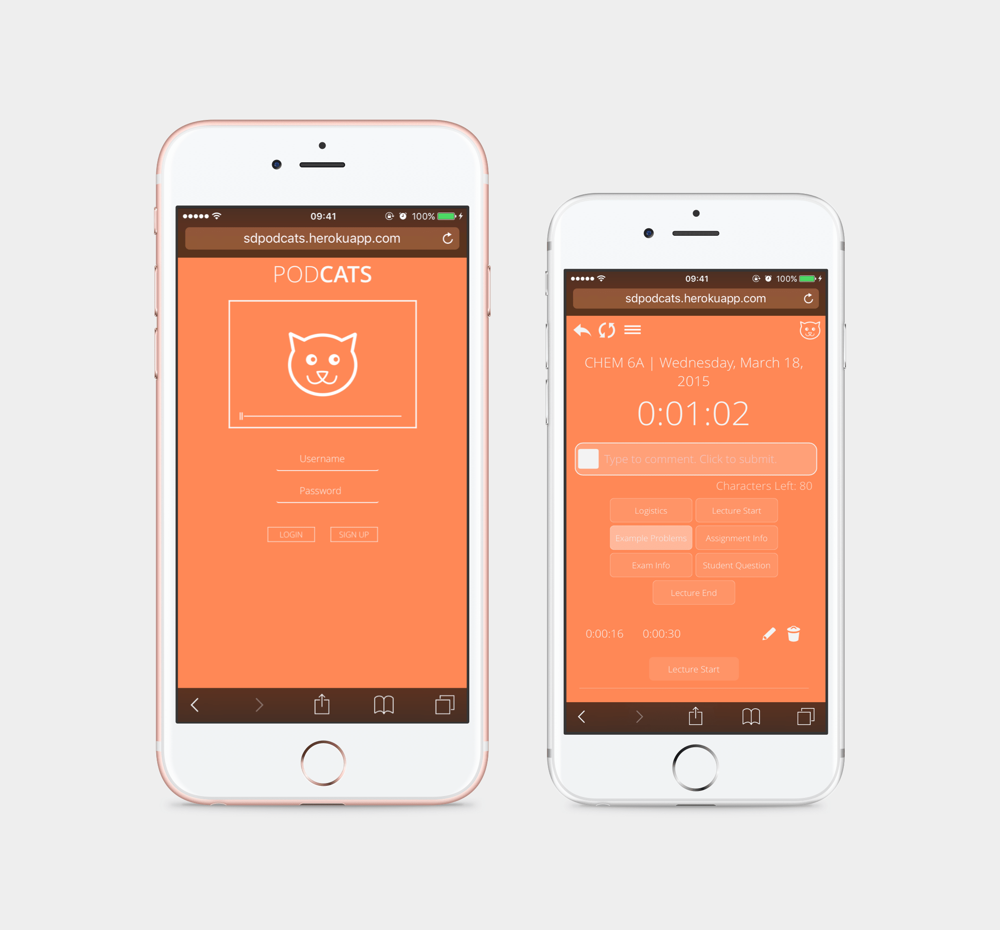
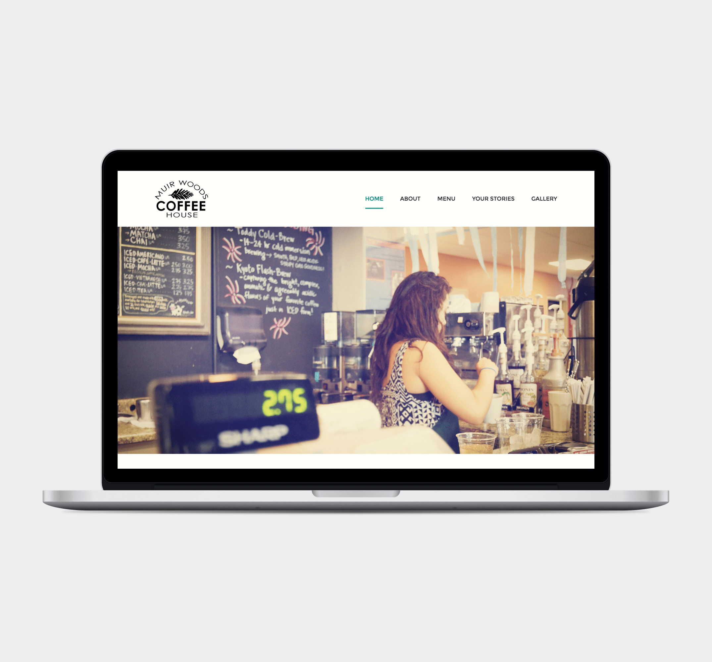

Portfolio
About Me
Résumé
Portfolio
About Me
Résumé
Hiya, I'm Christine—
I'm a UX/UI designer based in the Bay Area.

PodCats
Non-native Web Application

Muir Woods Coffee Shop
Website Redesign
University of Leicester
Usability & Information Architecture